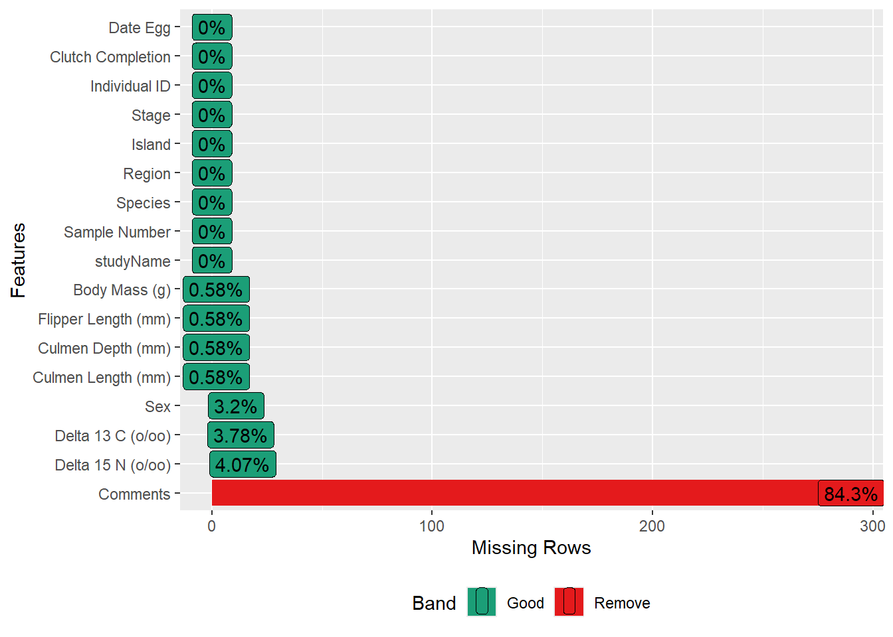

Statistical Thinking
Reference: https://www.fharrell.com/post/rflow/
Summary Staistic
Warning: package 'palmerpenguins' was built under R version 4.2.3
Warning: package 'Hmisc' was built under R version 4.2.2
Loading required package: lattice
Loading required package: survival
Warning: package 'survival' was built under R version 4.2.3
Loading required package: Formula
Warning: package 'Formula' was built under R version 4.2.2
Loading required package: ggplot2
Warning: package 'ggplot2' was built under R version 4.2.3
Attaching package: 'Hmisc'
The following objects are masked from 'package:base':
format.pval, units
penguins_raw
17 Variables 344 Observations
--------------------------------------------------------------------------------
studyName
n missing distinct
344 0 3
Value PAL0708 PAL0809 PAL0910
Frequency 110 114 120
Proportion 0.320 0.331 0.349
--------------------------------------------------------------------------------
Sample Number
n missing distinct Info Mean Gmd .05 .10
344 0 152 1 63.15 46.35 6.15 12.00
.25 .50 .75 .90 .95
29.00 58.00 95.25 121.00 134.85
lowest : 1 2 3 4 5, highest: 148 149 150 151 152
--------------------------------------------------------------------------------
Species
n missing distinct
344 0 3
Adelie Penguin (Pygoscelis adeliae) (152, 0.442), Chinstrap penguin (Pygoscelis
antarctica) (68, 0.198), Gentoo penguin (Pygoscelis papua) (124, 0.360)
--------------------------------------------------------------------------------
Region
n missing distinct value
344 0 1 Anvers
Value Anvers
Frequency 344
Proportion 1
--------------------------------------------------------------------------------
Island
n missing distinct
344 0 3
Value Biscoe Dream Torgersen
Frequency 168 124 52
Proportion 0.488 0.360 0.151
--------------------------------------------------------------------------------
Stage
n missing distinct value
344 0 1 Adult, 1 Egg Stage
Value Adult, 1 Egg Stage
Frequency 344
Proportion 1
--------------------------------------------------------------------------------
Individual ID
n missing distinct
344 0 190
lowest : N100A1 N100A2 N10A1 N10A2 N11A1 , highest: N98A2 N99A1 N99A2 N9A1 N9A2
--------------------------------------------------------------------------------
Clutch Completion
n missing distinct
344 0 2
Value No Yes
Frequency 36 308
Proportion 0.105 0.895
--------------------------------------------------------------------------------
Date Egg
n missing distinct Info Mean Gmd .05
344 0 50 0.999 2008-11-27 328 2007-11-12
.10 .25 .50 .75 .90 .95
2007-11-16 2007-11-28 2008-11-09 2009-11-16 2009-11-22 2009-11-26
lowest : 2007-11-09 2007-11-10 2007-11-11 2007-11-12 2007-11-13
highest: 2009-11-22 2009-11-23 2009-11-25 2009-11-27 2009-12-01
--------------------------------------------------------------------------------
Culmen Length (mm)
n missing distinct Info Mean Gmd .05 .10
342 2 164 1 43.92 6.274 35.70 36.60
.25 .50 .75 .90 .95
39.23 44.45 48.50 50.80 51.99
lowest : 32.1 33.1 33.5 34.0 34.1, highest: 55.1 55.8 55.9 58.0 59.6
--------------------------------------------------------------------------------
Culmen Depth (mm)
n missing distinct Info Mean Gmd .05 .10
342 2 80 1 17.15 2.267 13.9 14.3
.25 .50 .75 .90 .95
15.6 17.3 18.7 19.5 20.0
lowest : 13.1 13.2 13.3 13.4 13.5, highest: 20.7 20.8 21.1 21.2 21.5
--------------------------------------------------------------------------------
Flipper Length (mm)
n missing distinct Info Mean Gmd .05 .10
342 2 55 0.999 200.9 16.03 181.0 185.0
.25 .50 .75 .90 .95
190.0 197.0 213.0 220.9 225.0
lowest : 172 174 176 178 179, highest: 226 228 229 230 231
--------------------------------------------------------------------------------
Body Mass (g)
n missing distinct Info Mean Gmd .05 .10
342 2 94 1 4202 911.8 3150 3300
.25 .50 .75 .90 .95
3550 4050 4750 5400 5650
lowest : 2700 2850 2900 2925 2975, highest: 5850 5950 6000 6050 6300
--------------------------------------------------------------------------------
Sex
n missing distinct
333 11 2
Value FEMALE MALE
Frequency 165 168
Proportion 0.495 0.505
--------------------------------------------------------------------------------
Delta 15 N (o/oo)
n missing distinct Info Mean Gmd .05 .10
330 14 330 1 8.733 0.6323 7.897 8.047
.25 .50 .75 .90 .95
8.300 8.652 9.172 9.491 9.689
lowest : 7.63220 7.63452 7.63884 7.68528 7.68870
highest: 9.93727 9.98044 10.02019 10.02372 10.02544
--------------------------------------------------------------------------------
Delta 13 C (o/oo)
n missing distinct Info Mean Gmd .05 .10
331 13 331 1 -25.69 0.9093 -26.79 -26.69
.25 .50 .75 .90 .95
-26.32 -25.83 -25.06 -24.53 -24.36
lowest : -27.01854 -26.95470 -26.89644 -26.86485 -26.86352
highest: -24.16566 -24.10255 -23.90309 -23.89017 -23.78767
--------------------------------------------------------------------------------
Comments
n missing distinct
54 290 10
lowest : Adult not sampled. Adult not sampled. Nest never observed with full clutch. Nest never observed with full clutch. Nest never observed with full clutch. Not enough blood for isotopes. No blood sample obtained for sexing.
highest: No blood sample obtained. No delta15N data received from lab. Not enough blood for isotopes. Sexing primers did not amplify. Sexing primers did not amplify. Not enough blood for isotopes.
--------------------------------------------------------------------------------
Missing Values
library (Hmisc)library (DataExplorer)Warning: package 'DataExplorer' was built under R version 4.2.3<- penguins_raw$ Species <- as.factor (penguins_raw$ Species)$ Island <- as.factor (penguins_raw$ Island)$ ` Clutch Completion ` <- as.factor (penguins_raw$ ` Clutch Completion ` )$ Sex <- as.factor (penguins_raw$ Sex)plot_missing (Mypenguin)
Above is the missing value. As we can see, comments has the most missing value because it shows up when the data aren’t complete.
Table 1 – The body shape of different species
library (table1)table1 (~ ` Culmen Depth (mm) ` + ` Culmen Length (mm) ` + ` Flipper Length (mm) ` + ` Body Mass (g) ` | Species, data= Mypenguin)
Culmen Depth (mm)
Mean (SD)
18.3 (1.22)
18.4 (1.14)
15.0 (0.981)
17.2 (1.97)
Median [Min, Max]
18.4 [15.5, 21.5]
18.5 [16.4, 20.8]
15.0 [13.1, 17.3]
17.3 [13.1, 21.5]
Missing
1 (0.7%)
0 (0%)
1 (0.8%)
2 (0.6%)
Culmen Length (mm)
Mean (SD)
38.8 (2.66)
48.8 (3.34)
47.5 (3.08)
43.9 (5.46)
Median [Min, Max]
38.8 [32.1, 46.0]
49.6 [40.9, 58.0]
47.3 [40.9, 59.6]
44.5 [32.1, 59.6]
Missing
1 (0.7%)
0 (0%)
1 (0.8%)
2 (0.6%)
Flipper Length (mm)
Mean (SD)
190 (6.54)
196 (7.13)
217 (6.48)
201 (14.1)
Median [Min, Max]
190 [172, 210]
196 [178, 212]
216 [203, 231]
197 [172, 231]
Missing
1 (0.7%)
0 (0%)
1 (0.8%)
2 (0.6%)
Body Mass (g)
Mean (SD)
3700 (459)
3730 (384)
5080 (504)
4200 (802)
Median [Min, Max]
3700 [2850, 4780]
3700 [2700, 4800]
5000 [3950, 6300]
4050 [2700, 6300]
Missing
1 (0.7%)
0 (0%)
1 (0.8%)
2 (0.6%)
As we can see, different species have different features. In comparison with other two species, Gentoo penguin has shorter culmen depth, about an average of 15mm, but with longer culmen length (47.5mm) and larger body mass (4200g). So it gives us some judgment criteria to distinguish the differences.
Plot 2 – The pair plots of different species
<- Mypenguin[,- c (1 ,2 ,4 ,5 ,6 ,7 ,8 ,9 ,15 ,16 ,17 )]pairs (Mypen[,- 1 ],col = Mypen$ Species,oma= c (10 ,3 ,3 ,3 ))par (xpd = TRUE )legend ("bottom" , fill = unique (Mypen$ Species), legend = c (levels (Mypen$ Species)), cex = 0.6 )
The pair plot gives us a better way to check out the differences between three species.
Plot 3 – The distribution of penguins
ggplot (Mypenguin, aes (x = Island, fill = Species)) + geom_bar (alpha = 0.8 ) + scale_fill_manual (values = c ("darkorange" ,"purple" ,"cyan4" ), guide = FALSE ) + theme_minimal () + facet_wrap (~ Species, ncol = 1 ) + # separated by species coord_flip () # convert
The bar chart shows us the distribution of these three species spread on three islands. The data of Chinstrap penguin and Gentoo penguin only got from certain island. Maybe they need specific living environments, or maybe the widely spread of Adelie penguin is because their origin habitats force them to migrate, etc.
Plot 4 – The difference in sex
ggplot (Mypenguin, aes (x = ` Body Mass (g) ` , fill = Sex)) + geom_histogram (position = "identity" , alpha = 0.5 , bins = 50 )
This is a plot about the body mass of male and female penguins. Although I have searched that penguins are hard to distinguish their sex, it needs to check their DNA. But in the plot, it shows that the distribution of male penguins’ body mass is a little heavier than the female ones. So perhaps we can give the sex a guess by its mass.